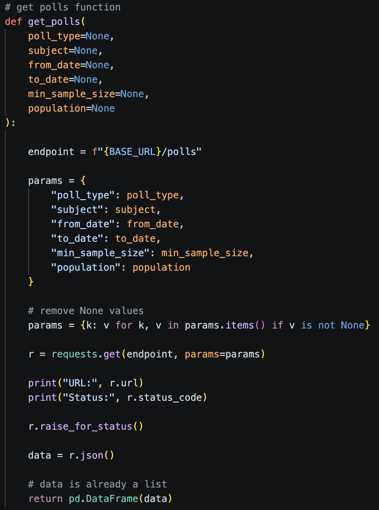
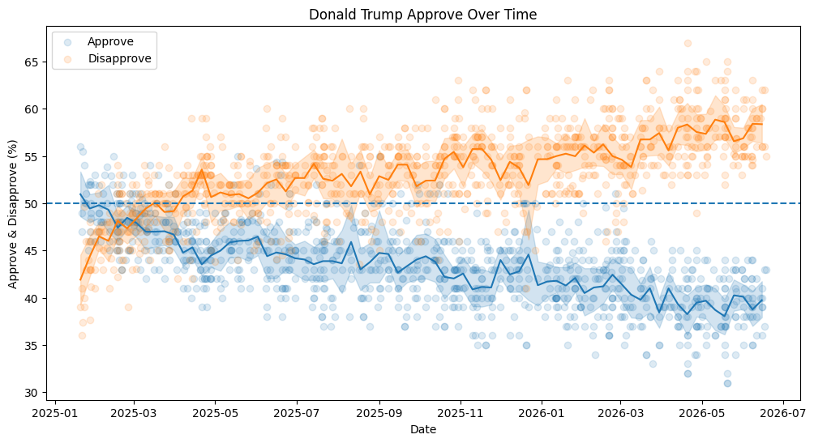
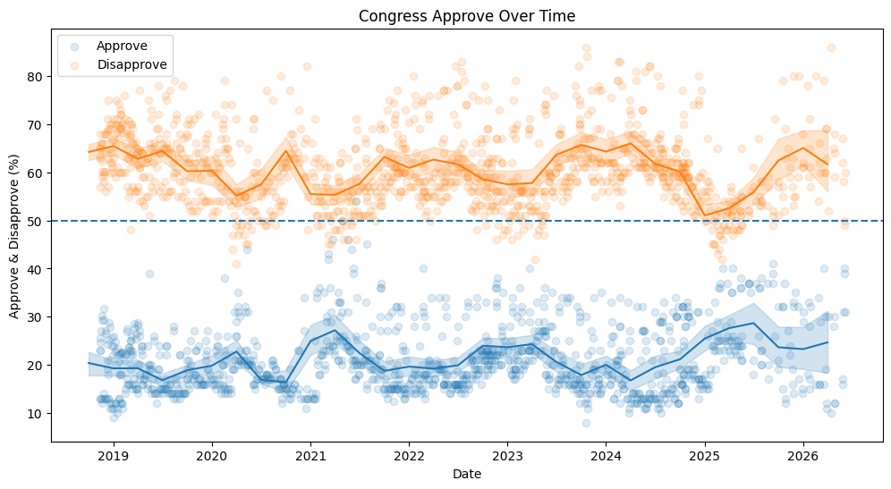
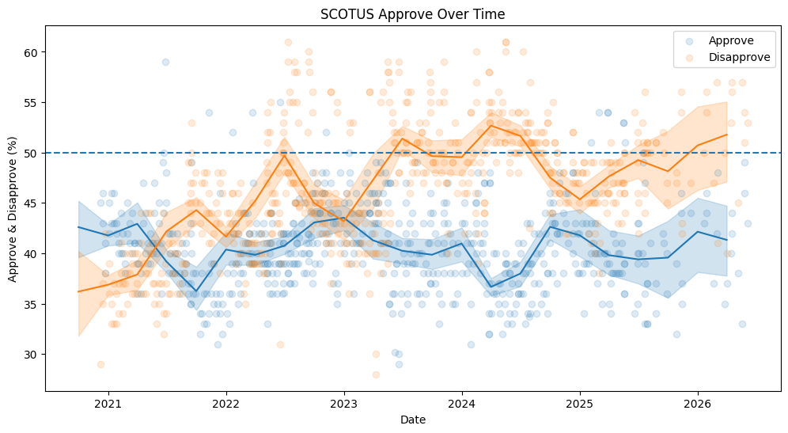

Approval, favorability, and generic ballot polling pulled directly from the VoteHub API, aggregated with sample-size and population-weighted rolling averages.
Function created to extract data via the API.

Snapshot of the rolling mean approval/favorability ratings with error bars and polls shown.



Each poll is weighted by its sample size, multiplied by a population factor — 1.5x for likely voters, 1.25x for registered voters, and 1x for all other populations. The graphs show a rolling weighted average to smooth short-term noise while staying responsive to real shifts in opinion.